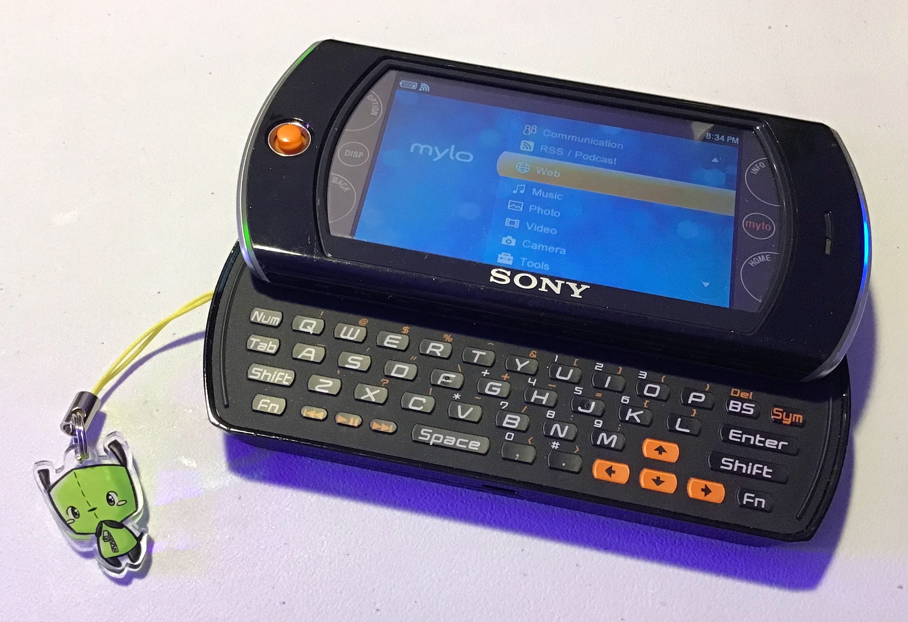

overviewthe sony mylo series of handheld devices perfectly represent the state of portable gadgets in the mid to late 2000s. web 2.0 was in full swing at this time - the internet was full of interactive services, messaging, games, and multimedia, so the idea of being able to access this stuff on the go with a pocket-sized device was super enticing. smartphones weren't all that popular yet, cellular data plans were painfully expensive, and public wi-fi hotspots were starting to become popular, so a portable media player with wi-fi and web browsing capabilities made perfect sense! the mylo's primary selling point was that it was just that - a pocket-sized, wi-fi equipped, web-browsing device that could also access IM services, run flash content, and play media. the "mylo" name even stands for "my life online" (which is pure frost bait), emphasizing the fact that it lets you connect with your online life much more easily and frequently. the mylo was only ever intended to be a portable web browser and media player, so running 3rd-party software isn't something it was ever concerned with. the original mylo com-1 had no way of running extra software at all, but the com-2 adds the ability to run widgets, similarly to android. the com-2 lets you download and install widgets that can be freely placed onto its blank "mylo screen", such as an RSS reader or google search bar. however, you can only place as many widgets as can fit onto the screen at once, which is frankly a pretty annoying limitation. the mylo com-2, the unit i own, offers many other upgrades over the original com-1 in addition to widget support, such as a much bigger screen that's actually a touchscreen, a built-in camera, and 802.11g wi-fi. back in the day, my portable web browsing and media playing device of choice was the DSi. i had never even heard of the mylo until recently, but if i knew about it back then, i would've been all over it. |

specifications
|
as mentioned earlier, the mylo com-2 is able to run custom widgets. unfortunately, all information about developing said widgets has vanished from the web by now, but i was able to reverse engineer a sudoku widget that i found on an old, defunct mylo forum. i've put together a short guide on developing your own simple widgets using my findings.